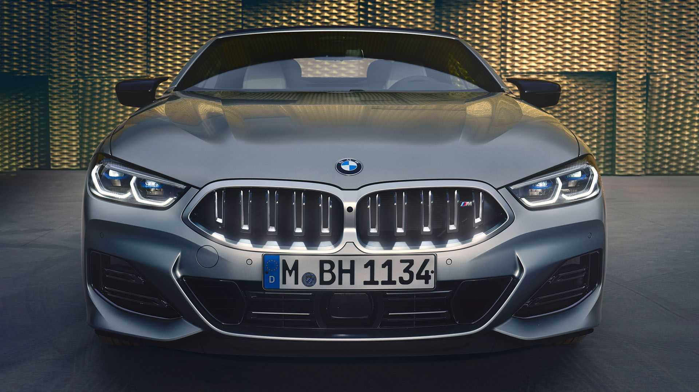
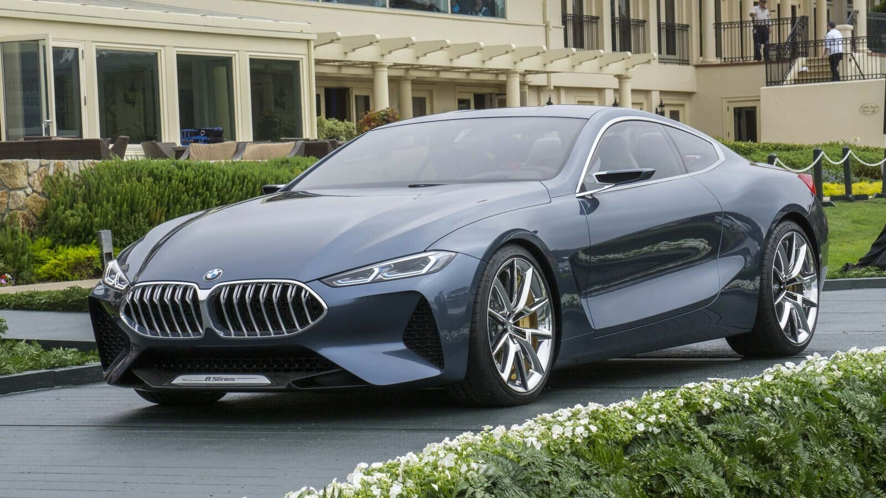
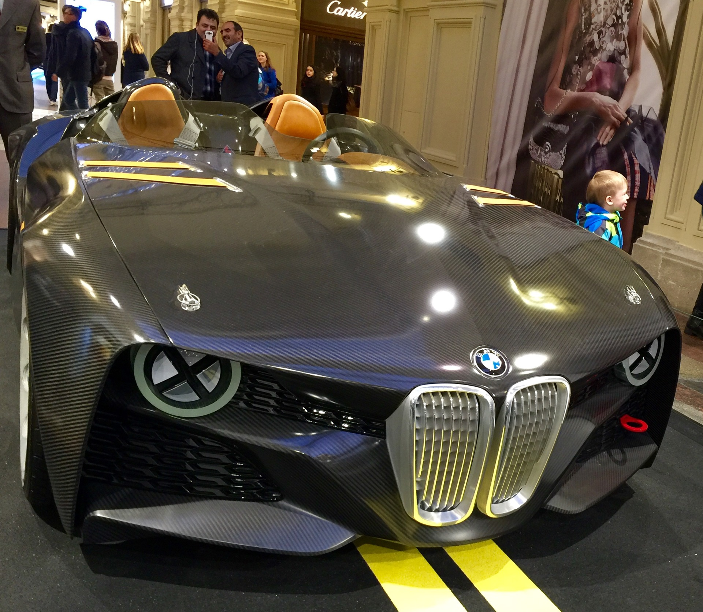

BMW AG (рус. Бэ-Эм-Вэ́[3]) — немецкий производитель автомобилей, мотоциклов, двигателей, а также велосипедов. Более 45 % акций принадлежит семье Квандт[4]. Председателем правления компании является Оливер Ципсе. Главный дизайнер — Йозеф Кабан[5]. В списке крупнейших публичных компаний мира Forbes Global 2000 за 2022 год BMW Group заняла 64-е место[6], а в списке Fortune Global 500 — 59-е место[7]. Девиз компании — «Freude am Fahren», с нем. — «С удовольствием за рулём». Для англоязычных стран был придуман также девиз «The Ultimate Driving Machine» (с англ. — «Идеальная машина для вождения»).
Компания Otto Flugmaschinenfabrik была основана в 1910 году Густавом Отто в Королевстве Бавария, которое входило в состав Германской империи. 7 марта 1916 года фирма была реорганизована в Bayerische Flugzeugwerke AG. Затем эта компания была переименована в Bayerische Motoren Werke (BMW) в 1922 году. Однако название BMW восходит к 1913 году, когда Карлом Раппом была основана компания, использовавшая это название, первоначально как Rapp Motorenwerke. Название и активы по производству двигателей Rapp Motorenwerke были переданы Bayerische Flugzeugwerke в 1922 году, которая приняла название в том же году.[7] Первый продукт BMW был произведен для истребителей Luftstreitkräfte. Это был шестицилиндровый авиационный двигатель под названием BMW IIIa, разработанный весной 1917 года инженером Максом Фризом. После окончания Первой мировой войны BMW осталась в бизнесе, производя мотоциклетные двигатели, сельскохозяйственное оборудование, предметы домашнего обихода и железнодорожные тормоза. Компания выпустила свой первый мотоцикл, BMW R 32, в 1923 году.
Компания ведёт свою историю с 1913 года, когда Карлом Фридрихом Раппом было создано предприятие по производству авиационных двигателей. Компания Bayerische Motoren Werke, созданная на основе предприятия, была официально зарегистрирована в 1917 году[13]. После Первой мировой войны по условиям Версальского мирного договора 1919 года было запрещено производство самолётов в Германии, вследствие чего BMW перешла на производство сельскохозяйственной техники, предметов домашнего обихода и тормозов для поездов. В 1923 году на фабрике в Мюнхене был выпущен первый мотоцикл BMW[13]. В 1924 году на самолёте, оснащённом двигателями BMW, состоялся первый межконтинентальный полёт в Персию. В 1926 году гидросамолёт Rohrbach Ro VII с двигателями BMW VI устанавливает пять мировых рекордов. В 1927 году было установлено 87 мировых авиарекордов, 29 из них — на самолётах с двигателями BMW. В 1928 году BMW приобрела автомобильный завод в Айзенахе (Тюрингия), в следующем году на этом заводе был выпущен первый автомобиль компании — Dixi. В том же году Эрнст Хенне на мотоцикле с мотором BMW становится самым быстрым мотоциклистом в мире[13]. BMW 328 В 1933 году компания начала производство авиационных двигателей для Luftwaffe, в частности приобрела лицензию на выпуск моторов Hornet. Также началось производство автомобилей 300-й серии, в частности очень успешный BMW 328, представленный в сентябре 1936 года[13]. В июне 1939 года Siemens продал свой машиностроительный филиал BMW, включавший Бранденбургские моторостроительные заводы[нем.], а также заводы и фабрики, лаборатории и испытательные полигоны в Шпандау, Нидербарниме, Басдорфе и Зюльсдорфе. Кроме этого, на государственные средства был построен новый завод близ Мюнхена. На базе приобретённых предприятий в дополнение к уже имеющимся двигателестроительным заводам были созданы: фабрика авиационных и ракетных двигателей (Flugzeugturbinenfabrik) и подразделение ракетной техники и ракетного вооружения (BMW-Raketenabteilung) с исследовательским центром в Зюльсдорфе и производством в Шпандау. К осени 1940 года на ракетных заводах BMW в Шпандау и Нидербарниме было занято только немецких граждан около 10 тыс. человек[14] плюс военнопленные, к которым вскоре присоединились остарбайтеры. В 1942 году под давлением Имперского управления вооружений пост председателя правления занял Фриц Хилле[15][13]
Компания Otto Flugmaschinenfabrik была основана в 1910 году Густавом Отто в Королевстве Бавария, которое входило в состав Германской империи. 7 марта 1916 года фирма была реорганизована в Bayerische Flugzeugwerke AG. Затем эта компания была переименована в Bayerische Motoren Werke (BMW) в 1922 году. Однако название BMW восходит к 1913 году, когда Карлом Раппом была основана компания, использовавшая это название, первоначально как Rapp Motorenwerke. Название и активы по производству двигателей Rapp Motorenwerke были переданы Bayerische Flugzeugwerke в 1922 году, которая приняла название в том же году.[7] Первый продукт BMW был произведен для истребителей Luftstreitkräfte. Это был шестицилиндровый авиационный двигатель под названием BMW IIIa, разработанный весной 1917 года инженером Максом Фризом. После окончания Первой мировой войны BMW осталась в бизнесе, производя мотоциклетные двигатели, сельскохозяйственное оборудование, предметы домашнего обихода и железнодорожные тормоза. Компания выпустила свой первый мотоцикл, BMW R 32, в 1923 году.
BMW стала производителем автомобилей в 1928 году, когда приобрела Fahrzeugfabrik Eisenach, которая в то время строила Austin 7 по лицензии Dixi.[8] Первым автомобилем, проданным как BMW, был обновленный BMW Dixi под названием BMW 3/15 после приобретения BMW производителя автомобилей Automobilwerk Eisenach. На протяжении 1930-х годов BMW расширяла свой модельный ряд за счет спортивных автомобилей и более крупных автомобилей класса люкс.
Главная gallery